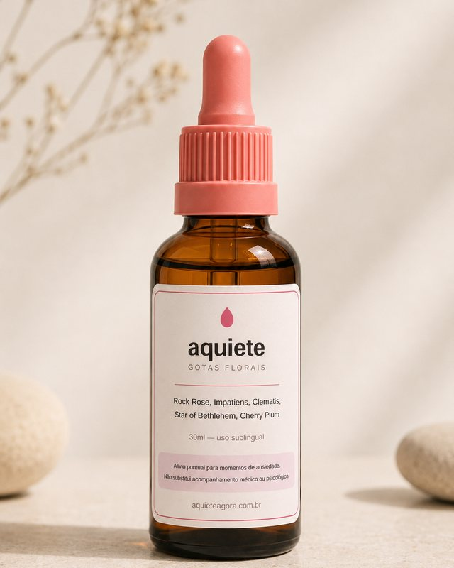
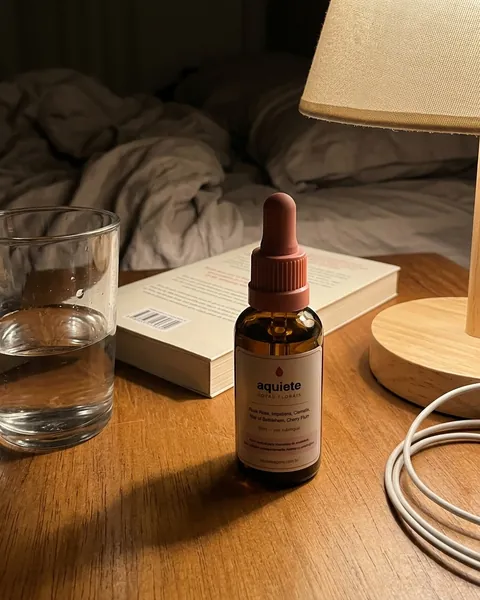
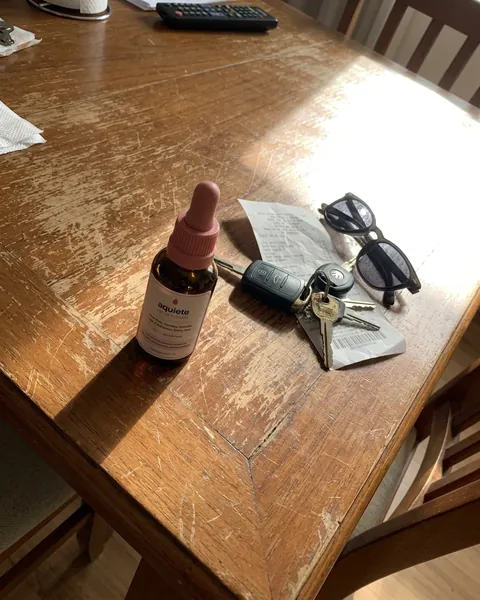
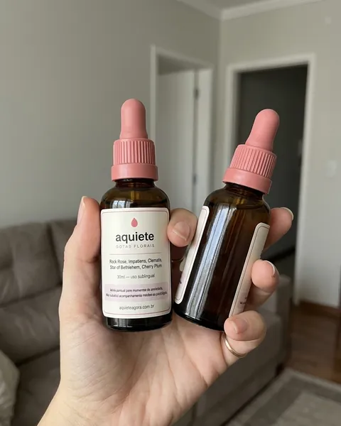

Rock Rose
Helianthemum nummularium
Tradicionalmente associado a momentos de pânico e terror repentino — o floral do susto agudo.
Quatro gotas embaixo da língua. Absorção rápida, sem engolir, sem água, sem ninguém perceber. Um composto floral natural para atravessar o momento e voltar ao seu dia.

Feito com florais de Bach, sem substâncias sintéticas ou químicos artificiais na composição.
Diferente de medicamentos controlados, não causa dependência física ou tolerância com o uso contínuo.
Por ser um floral natural, pode ser adquirido e usado livremente, sem necessidade de prescrição médica.
O coração dispara antes de você entender o motivo. A respiração fica curta, alta, presa no peito. As mãos gelam.
E aí vem a parte pior: você precisa continuar. Tem uma reunião em dez minutos. Tem gente esperando. Tem o carro, a fila, a ligação que não pode adiar. Então você faz o que sempre faz — respira fundo, disfarça e finge que está tudo bem, enquanto por dentro tudo grita.
Você já tentou os vídeos de respiração. Já ouviu "isso é só sua cabeça", "bebe uma água", "pensa positivo". Nada disso serve quando a crise chega às 14h de uma terça-feira comum e você tem 5 minutos para se recompor.
Você não precisa de um tratamento novo para a vida inteira.
Precisa de algo para os próximos quinze minutos.
Aquiete é um composto de cinco florais de Bach em base líquida, feito para uso pontual — naquele instante específico em que você precisa desacelerar.
Quatro gotas, direto do conta-gotas. Sem água, sem misturar, sem preparo. Discreto o bastante para fazer em qualquer lugar.
A região sublingual é altamente vascularizada — por isso a via é usada quando se quer absorção rápida, sem passar pela digestão.
A absorção pela via sublingual é rápida — não precisa esperar muito pra notar a diferença.
A combinação clássica desenvolvida pelo Dr. Edward Bach nos anos 1930 para situações de emergência emocional — usada há quase um século no mundo todo.
Tradicionalmente associado a momentos de pânico e terror repentino — o floral do susto agudo.
Indicado na tradição para impaciência, irritação e a sensação de que tudo demora demais.
Associado à sensação de estar "fora do ar", desconectado, com a mente longe do presente.
Usado tradicionalmente após choques e notícias difíceis, quando o corpo ainda está em alerta.
Ligado ao medo de perder o controle — a sensação de que você vai "surtar" na frente de todos.
Sem açúcar, sem corante, sem conservante artificial, sem glúten e sem lactose.
Essências florais em base líquida. Nada de fórmula sintética ou princípio ativo farmacológico.
Não contém benzodiazepínicos nem qualquer substância que gere tolerância ou abstinência. Usa quando precisa, para quando quiser.
Sem água, sem preparo, sem esperar hora certa. Abre, pinga, segue — em pé no corredor se for preciso.
Venda livre. Você não precisa marcar consulta nem esperar receita para ter o seu — e ele não interfere no que já toma.
Frasco de 30 ml que some no bolso ou na necessaire. Ninguém à sua volta precisa saber.
Pode ser usado junto com o acompanhamento que você já faz. Terapia e medicação prescrita continuam do seu lado.

“Eu deitava e a cabeça começava a rodar sozinha: conta pra pagar, conversa do trabalho, coisa de dois anos atrás. Comecei a pingar quando apago a luz e o pensamento desacelera na hora. Faz três semanas que eu durmo a noite inteira.”

“Tenho reunião de resultado toda segunda e eu chegava com a mão gelada e a voz tremendo. Agora deixo o frasco no bolso e pingo no estacionamento, antes de subir. Entro na sala inteiro e falo o que eu tenho pra falar. Mudou a minha segunda-feira.”

“Comprei desacreditada. Já tinha tentado chá, respiração, aplicativo de meditação. O que me pegou foi a velocidade: pingo embaixo da língua parada no trânsito e em poucos minutos o peito abre. Estou no segundo frasco e não saio mais de casa sem ele.”
Não. Aquiete não contém benzodiazepínicos, ansiolíticos ou qualquer substância psicoativa que gere tolerância ou síndrome de abstinência. Você pode usar por um período e parar quando quiser, sem desmame e sem efeito rebote.
Essências florais são amplamente consideradas seguras e não têm interação farmacológica conhecida com medicamentos. Ainda assim, três ressalvas honestas: verifique o rótulo se você tem alergia a algum componente da base, e se estiver grávida, amamentando ou for dar a uma criança, converse antes com seu médico.
Se a versão que você comprar tiver conservante à base de álcool, essa informação estará no rótulo — relevante para quem evita álcool por qualquer motivo.
Não, e não queremos que substitua. Aquiete é um complemento de bem-estar para momentos pontuais — não é medicamento e não trata transtorno de ansiedade, síndrome do pânico ou qualquer condição clínica.
Se você faz tratamento, continue. Nunca interrompa medicação prescrita por conta própria. E se as crises são frequentes ou intensas, procure um profissional de saúde — isso é o mais importante desta página.
Rápido. A via sublingual é usada exatamente por isso — a absorção começa em segundos, direto na corrente, sem passar pela digestão.
Na prática, a maioria relata sentir a diferença já nos primeiros minutos de uso. Pingou, segurou, sentiu.
O uso tradicional são 4 gotas sublinguais no momento de necessidade, podendo repetir ao longo do dia conforme sentir preciso. Não há dose máxima rígida por não ser medicamento, mas siga sempre a orientação do rótulo do seu frasco.
Não há interação medicamentosa conhecida com essências florais. Mesmo assim, a resposta responsável é: avise seu médico ou psiquiatra sobre qualquer coisa que você esteja usando. Leva trinta segundos e elimina a dúvida.
Cada frasco de 30 ml tem cerca de 600 gotas — algo em torno de 150 aplicações de 4 gotas.
Sobre levar mais de um: a ideia não é guardar um atrás do outro, e sim usar em paralelo. Crise não avisa e não escolhe lugar — por isso faz sentido ter um na bolsa, um no carro e um na cabeceira, em vez de um só que nunca está onde você precisa. É para isso que existem os kits.
Por ser manipulado, cada lote tem validade própria, impressa no rótulo do seu frasco. Leve a quantidade que você realmente vai usar dentro dela — e o kit de 4 costuma ser escolhido por quem divide com alguém da família.
Não dá para escolher a hora em que a ansiedade chega. Dá para escolher ter algo no bolso quando ela chegar.
FRETE GRÁTIS A PARTIR DE 2 UNIDADES · ENVIO EM ATÉ 2 DIAS ÚTEIS
Cada frasco tem 30 ml — cerca de 150 aplicações de 4 gotas
ou parcelado no cartão
Garantia de 30 dias. Mudou de ideia e ainda não abriu o frasco? Escreve pra gente com o número do pedido que devolvemos o valor pago. Sem formulário e sem justificativa. Ver condições.
Se você está passando por crises frequentes, procure um profissional de saúde mental. Aquiete é um apoio para o momento — não um substituto para cuidado.